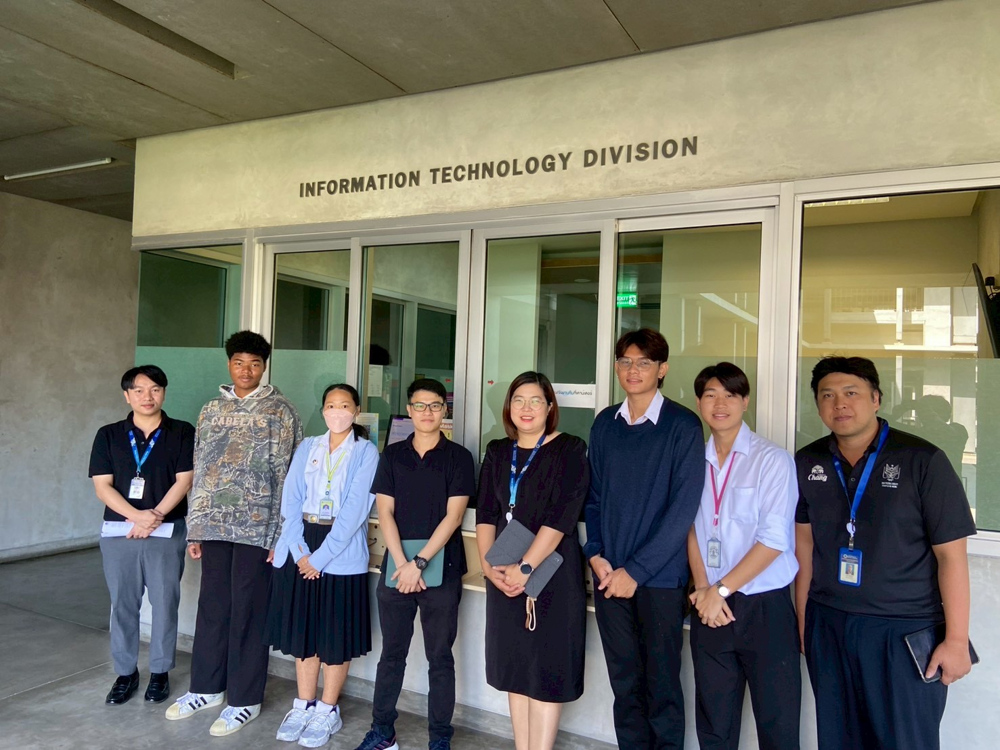
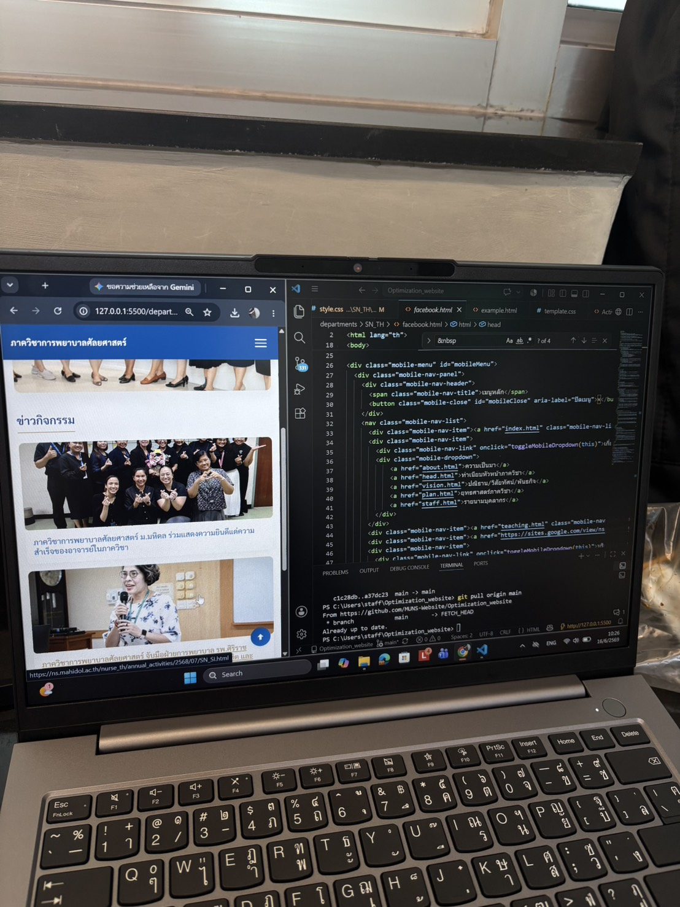
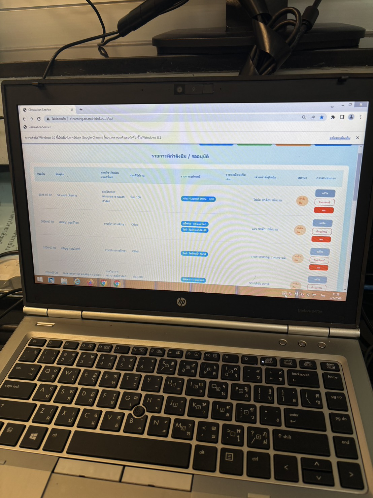

Web administer
1 June 2026 - 31 July 2026Improved and developed existing websites of the Faculty of Nursing to make them more modern, user-friendly, and optimize their UX/UI. Responsible for updating websites for two academic departments in both Thai and English versions, and completely redesigning the WHO Collaborating Centre website in the English version.
Responsible for updating and improving the user experience (UX/UI) of the Department of Medical Nursing website to make it modern, responsive, and easy to navigate for students and staff.
Redesigned and updated the website for the Department of Surgical Nursing, enhancing accessibility, structuring content logically, and creating a modern look for both Thai and English audiences.
Redesigned and modernized the layout and information architecture of the WHO Collaborating Centre website. Improved usability and navigation to provide clean access to international research and academic collaborations.


